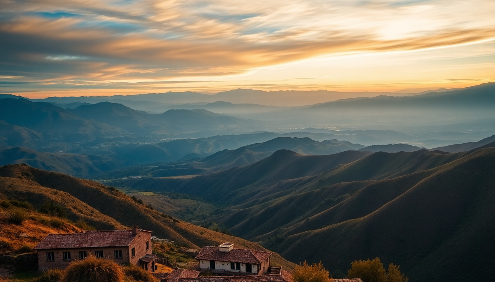

Best Day Trips from Cusco: Sacred Valley, Rainbow Mountain & Moray

I’ve been based in Cusco for three weeks now, and I’ve learned that the city itself is just the appetizer. The real meals are the day trips that fan out into the surrounding Andes. I’ll walk you through the three I actually did—Sacred Valley, Rainbow Mountain, and Moray—with honest notes on what’s worth your time, what to skip, and how to not end up gasping for air at 5,000 meters.
What’s the best way to tour the Sacred Valley?
The Sacred Valley isn’t one place—it’s a string of ruins, markets, and towns running from Pisac to Ollantaytambo. I rented a car for the day (about $50 through a local agency near Plaza de Armas), but you can also hop on collectivos from the corner of Avenida Grau for a few soles. I’d recommend starting early, like 7 AM, to beat both the crowds and the afternoon sun.
- Pisac Ruins: Climb the terraces on the hillside—the Inca stonework is cleaner than anything in Cusco. The market below is touristy but worth 30 minutes for the empanadas at Doña Clotilde’s stall.
- Ollantaytambo: This is the most intact Inca town I’ve seen. The fortress steps are brutal (I counted 200+), but the view of the valley from the top is the payoff. Grab lunch at El Albergue Restaurant inside the train station—their quinoa soup is the real deal.
- Chinchero: A Sunday market with weavers selling alpaca scarves for half the price of Cusco’s San Pedro Market. I bought two for 40 soles total.
One warning: skip the “Sacred Valley tour” packages sold on the street. They rush you through four sites in five hours and stop at a silver shop you didn’t ask for. Self-driving or using collectivos gave me control over time.
Is Rainbow Mountain worth the hype?
Short answer: yes, but only if you’re acclimated. I made the mistake of going on day three in Cusco—I was still dizzy from the altitude. The hike starts at 4,600 meters and climbs to 5,200. That’s higher than Everest Base Camp. I saw three people get carried down by horses on my trip.
- Getting there: Most tours leave Cusco at 3 AM. I booked with Andean Travel Experience ($35, includes breakfast and lunch). The two-hour bus ride to the trailhead is bumpy but scenic.
- The hike: It’s 4.5 km up a gravel path. Took me 2 hours going up, 1.5 down. The striped colors of the mountain are real—not Photoshopped—but they’re muted on cloudy days. Go on a clear morning.
- The altitude: Chew coca leaves (locals sell them at the trailhead for 5 soles). Bring a water bottle with electrolyte powder. I used a portable oxygen can from Farmacia Inkafarma in Cusco—it helped on the final push.
Honest opinion: the view at the top is a ten-minute photo op. The journey is the point. If you’re short on time, I’d pick the Sacred Valley over this. But if you want a physical challenge and a story to tell, Rainbow Mountain delivers.
What’s the deal with the Moray terraces?
Moray is often lumped with the Salt Mines of Maras, and that’s the smart way to do it. The terraces are three massive circular depressions in the earth, built by the Incas as an agricultural laboratory. Each level has a different microclimate—the temperature difference between the top and bottom can be 15°C. I stood at the bottom ring (the deepest) and felt the air get noticeably warmer.
- Moray ruins: Entrance is 10 soles as part of the Cusco Tourist Ticket (BTI). No guides needed—the site is small and self-explanatory. I spent 45 minutes there.
- Salt Mines of Maras: 3 km down the road. Thousands of salt evaporation ponds cascade down a hillside. You can walk through them for 10 soles. Buy a bag of pink salt (5 soles) from the vendor at the exit—it’s the same stuff sold in Cusco for triple the price.
- Getting there: I took a colectivo from Cusco’s Puente Rosario to Urubamba (5 soles), then a taxi to Moray (20 soles). Total time: 1.5 hours each way.
Skip the combined tour that includes Chinchero—it’s too much driving. Moray and Maras alone make a solid half-day trip. Pair it with a late lunch at Restaurant El Huacatay in Urubamba (their trout ceviche is the best I’ve had in Peru).
When should I visit each of these day trips?
Timing matters more than you think. I did Sacred Valley in June (dry season, peak tourism) and Rainbow Mountain in early July. Both were manageable, but the trails were packed by 10 AM.
- Sacred Valley: April to October is ideal. The rainy season (November to March) can wash out the dirt roads to Moray and make the Rainbow Mountain trail muddy and slippery.
- Rainbow Mountain: Best from May to September. I’d avoid December through February—I’ve heard reports of trail closures due to landslides.
- Moray and Maras: Any dry day works. The salt ponds are active year-round, but they’re most photogenic in the morning light (before 11 AM).
Pro tip: check the weather on Senamhi’s website (Peru’s meteorological service) the night before. It’s more accurate than any app.
What should I pack for these day trips?
I learned the hard way. On my first trip to Rainbow Mountain, I wore jeans and a cotton T-shirt—dumb move. The weather swings from freezing at dawn to sunburn-level UV by noon.
- Layers: A thermal base, fleece, and windproof jacket. I used a Patagonia Nano Puff for the summit and stripped down to a long-sleeve for the descent.
- Footwear: Hiking boots with ankle support. The trail to Rainbow Mountain is loose gravel and scree. I saw people in sneakers sliding all over.
- Sun protection: SPF 50 sunscreen, a wide-brimmed hat, and sunglasses. The UV index at 5,000 meters is brutal—I got burned on my nose despite reapplying.
- Hydration: A 1-liter water bottle minimum. For Moray and Sacred Valley, you can refill at restaurants. For Rainbow Mountain, carry 1.5 liters and a hydration bladder.
One item I didn’t bring but wish I had: trekking poles. The descent from Rainbow Mountain wrecked my knees. You can rent them at the trailhead for 10 soles.
FAQ
Is it safe to do these day trips without a guide? Yes, for Sacred Valley and Moray/Maras. I drove myself to both and had no issues. For Rainbow Mountain, I’d recommend a guide if it’s your first time at high altitude—they carry oxygen and know the route. Solo hiking is possible but risky if you get altitude sickness.
How do I avoid altitude sickness on these trips? Acclimate in Cusco for at least two days before doing anything above 4,000 meters. Drink coca tea (available at every hotel), eat light meals, and avoid alcohol. I also took acetazolamide (Diamox) prescribed by a clinic in Lima—it reduced my headache significantly.
Can I combine Rainbow Mountain and Moray in one day? Technically yes, but don’t. Rainbow Mountain alone takes 10-12 hours with travel. Adding Moray means 14+ hours of driving and hiking. You’ll be exhausted and won’t enjoy either. Split them into separate days.
Conclusion
- Sacred Valley is the most rewarding day trip—do it self-guided with a car or collectivos for flexibility. Hit Pisac, Ollantaytambo, and Chinchero.
- Rainbow Mountain is a physical test, not a sightseeing tour. Go only after 3+ days in Cusco and pack layers, poles, and electrolytes.
- Moray and Maras make a perfect half-day duo. Pair them with lunch at El Huacatay in Urubamba.
- Book tours locally in Cusco for the best prices—street agencies near Plaza de Armas offer Rainbow Mountain trips for $25-$40.
- Skip the all-in-one tours. They’re rushed and overpriced. Your time is better spent on fewer sites done well.